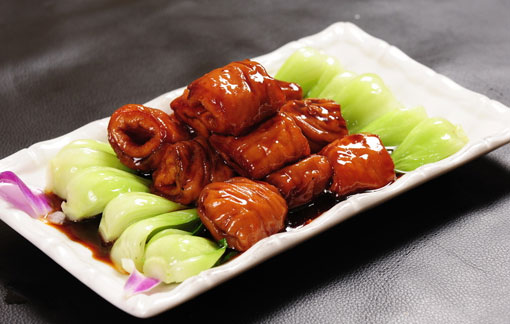

鲁菜介绍
鲁菜，是起源于山东的齐鲁风味，是中国传统四大菜系（也是八大菜系）中唯一的自发型菜系 （相对于淮扬、川、粤等影响型菜系而言）， 是历史最悠久、技法最丰富、难度最高、最见功力的菜系。2500年前源于山东的儒家学派奠定了中国饮食注重精细、中和、健康的审美取向；1600年《齐民要术》总结的黄河中下游地区的“蒸、煮、烤、酿、煎、炒、熬、烹、炸、腊、盐、豉、醋、酱、酒、蜜、椒”奠定了中式烹调技法的框架； 明清时期大量山东厨师和菜品进入宫廷，使鲁菜雍容华贵、中正大气、平和养生的风格特点进一步得到升华。 
鲁菜讲究原料质地优良，以盐提鲜，以汤壮鲜，调味讲求咸鲜纯正，突出本味。大葱为山东特产， 多数菜肴要要用葱姜蒜来增香提味，炒、熘、爆、扒、烧等方法都要用葱，尤其是葱烧类的菜肴， 更是以拥有浓郁的葱香为佳，如葱烧海参、葱烧蹄筋；喂馅、爆锅、凉拌都少不了葱姜蒜。海鲜类量多质优，异腥味较轻，鲜活者讲究原汁原味，虾、蟹、贝、蛤， 多用姜醋佐食；燕窝、鱼翅、海参、干鲍、鱼皮、鱼骨等高档原料，质优味寡，必用高汤提鲜。
鲁菜的突出烹调方法为爆、扒、 拔丝，尤其是爆、扒素为世人所称道。爆，分为油爆、酱爆、芫爆、葱爆、汤爆、水爆、 火爆等，“烹饪之道，如火中取宝。不及则生，稍过则老，争之于俄顷，失之于须臾”。 爆的技法充分体现了鲁菜在用火上的功夫。因此，世人称之为“食在中国，火在山东”。